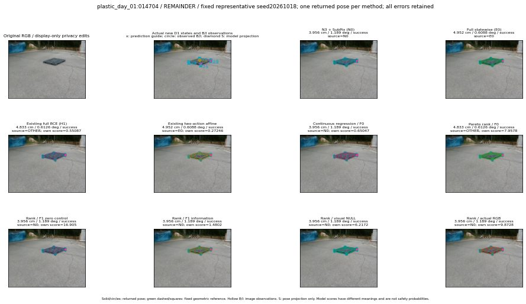

실선은 반환 자세, 초록 점선은 고정 기하 참조입니다. S는 영상 관측이 아닙니다. 점수는 모델별 의미가 다르며 보정된 안전 확률이 아닙니다. 개인정보 처리는 표시 사본에만 적용했습니다.
| 방법·seed | 위치 / 회전 / 공동성공 | 실제 출처 | 선택 후보 | 각 모델 자체 점수 |
|---|---|---|---|---|
| N0 | 3.956 cm / 1.189 deg / success | N0 | N/A | N/A |
| E0 | 4.952 cm / 0.6088 deg / success | E0 | N/A | N/A |
| E0_REGENERATED | 4.952 cm / 0.6088 deg / success | E0 | E0_REGENERATED | N/A |
| POSEFIX_SUBPIX_PF_ANCHOR | 3.956 cm / 1.189 deg / success | OTHER | N/A | N/A |
| POSEFIX_SUBPIX_YOLO_ANCHOR | 3.956 cm / 1.189 deg / success | OTHER | N/A | N/A |
| D1_H1_MLP_s20261018 | 4.833 cm / 0.6126 deg / success | OTHER | G10/ORIGINAL_WD/selected | 0.550872802734375 |
| D1_H1_MLP_s20261019 | 4.833 cm / 0.6126 deg / success | OTHER | G10/ORIGINAL_WD/selected | 0.552020788192749 |
| D1_H1_MLP_s20261020 | 4.833 cm / 0.6126 deg / success | OTHER | G10/ORIGINAL_WD/selected | 0.19963732361793518 |
| D1_H1_PAIR_MLP_s20261018 | 4.952 cm / 0.6088 deg / success | E0 | E0_REGENERATED | -0.30299991369247437 |
| D1_H1_PAIR_MLP_s20261019 | 3.956 cm / 1.189 deg / success | N0 | N0 | -0.2867032587528229 |
| D1_H1_PAIR_MLP_s20261020 | 3.956 cm / 1.189 deg / success | N0 | N0 | 0.08878470957279205 |
| D1_H1_PAIR_ROLE_AFFINE_s20261018 | 4.952 cm / 0.6088 deg / success | E0 | E0_REGENERATED | 0.2724559009075165 |
| D1_H1_PAIR_ROLE_AFFINE_s20261019 | 4.952 cm / 0.6088 deg / success | E0 | E0_REGENERATED | 0.1546396017074585 |
| D1_H1_PAIR_ROLE_AFFINE_s20261020 | 3.956 cm / 1.189 deg / success | N0 | N0 | 0.08809277415275574 |
| R_CONT_F0_s20261018 | 3.956 cm / 1.189 deg / success | N0 | N0 | 0.6504658460617065 |
| R_CONT_F0_s20261019 | 3.956 cm / 1.189 deg / success | N0 | N0 | 0.6213534474372864 |
| R_CONT_F0_s20261020 | 4.833 cm / 0.6126 deg / success | OTHER | G10/ORIGINAL_WD/selected | 0.6571499705314636 |
| R_ORDER_F0_s20261018 | 4.833 cm / 0.6126 deg / success | OTHER | G10/ORIGINAL_WD/selected | 7.957838535308838 |
| R_ORDER_F0_s20261019 | 3.956 cm / 1.189 deg / success | N0 | N0 | 6.704672813415527 |
| R_ORDER_F0_s20261020 | 3.956 cm / 1.189 deg / success | N0 | N0 | 3.897374153137207 |
| R_ORDER_F1_ZERO_s20261018 | 3.956 cm / 1.189 deg / success | N0 | N0 | 16.9046630859375 |
| R_ORDER_F1_ZERO_s20261019 | 4.833 cm / 0.6126 deg / success | OTHER | G10/ORIGINAL_WD/selected | 15.618199348449707 |
| R_ORDER_F1_ZERO_s20261020 | 4.833 cm / 0.6126 deg / success | OTHER | G10/ORIGINAL_WD/selected | 11.106802940368652 |
| R_ORDER_F1_s20261018 | 3.956 cm / 1.189 deg / success | N0 | N0 | 1.4802405834197998 |
| R_ORDER_F1_s20261019 | 3.956 cm / 1.189 deg / success | N0 | N0 | 9.174592971801758 |
| R_ORDER_F1_s20261020 | 3.956 cm / 1.189 deg / success | N0 | N0 | 2.9494335651397705 |
| V_ORDER_NULL_s20261018 | 3.956 cm / 1.189 deg / success | N0 | N0 | 6.217202663421631 |
| V_ORDER_NULL_s20261019 | 3.956 cm / 1.189 deg / success | N0 | N0 | 4.581231117248535 |
| V_ORDER_NULL_s20261020 | 4.833 cm / 0.6126 deg / success | OTHER | G10/ORIGINAL_WD/selected | 5.982717514038086 |
| V_ORDER_RGB_s20261018 | 3.956 cm / 1.189 deg / success | N0 | N0 | 9.872788429260254 |
| V_ORDER_RGB_s20261019 | 3.956 cm / 1.189 deg / success | N0 | N0 | 4.471221446990967 |
| V_ORDER_RGB_s20261020 | 3.956 cm / 1.189 deg / success | N0 | N0 | -4.2076826095581055 |